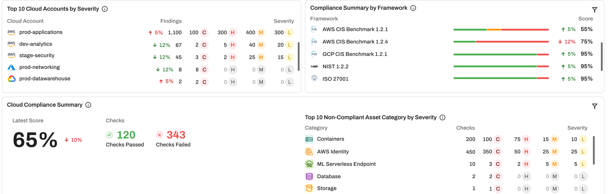
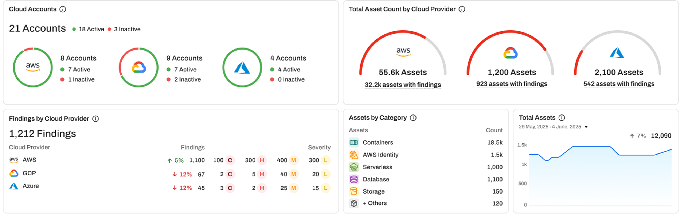
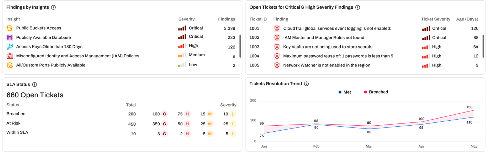
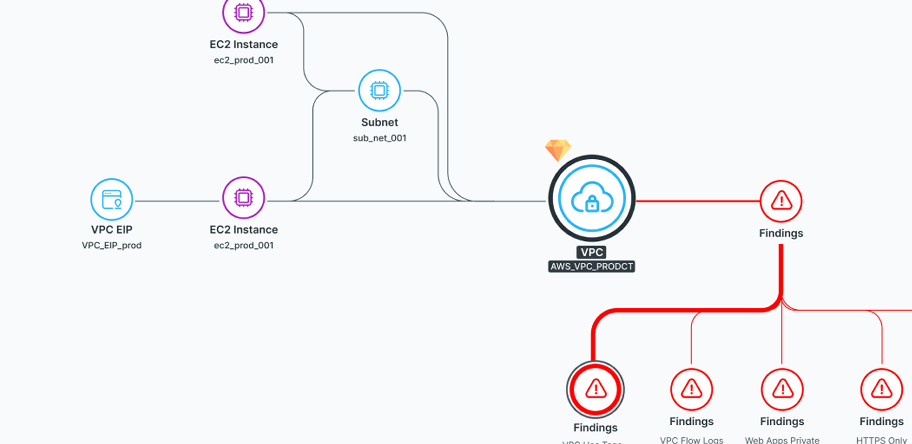
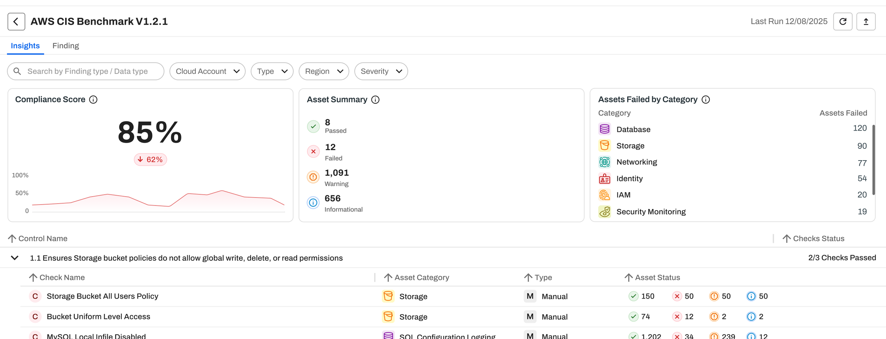
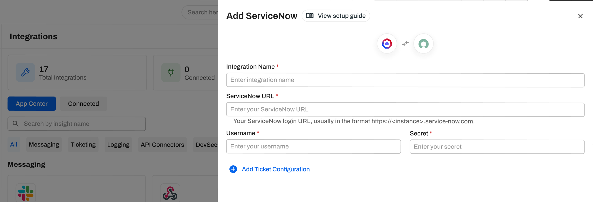
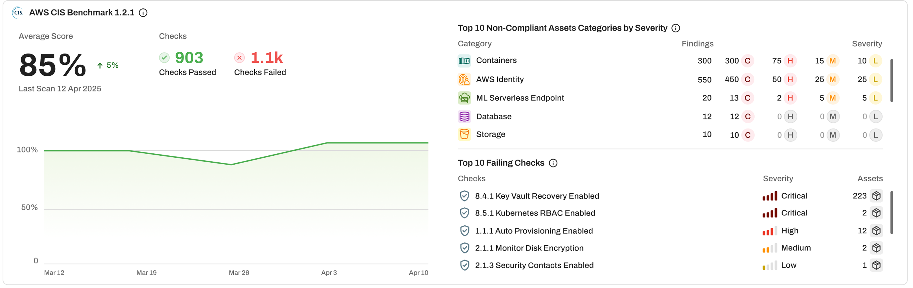

CSPM best practices cheat sheet
Fix the cloud
settings that
invite a breach
Do's and don'ts for six CSPM practices across AWS, Azure and GCP, with a gap check and the AccuKnox setup page for each gap.
Do's and don'ts for six CSPM practices across AWS, Azure and GCP, with a gap check and the AccuKnox setup page for each gap.
A public bucket, an open port or an old access key gives an attacker a way in with no exploit at all. Most teams already had a cloud incident last year, and most of them needed more than a day to close it.
of organizations had a cloud security incident in the past year.
of publicly accessible cloud storage holds sensitive data, and 97% of that data is restricted or confidential.
of organizations took more than 24 hours to remediate a breach. Only 6% remediated within the first hour.
Each cause below has a matching practice later in this guide.
At least 84% of organizations use more than one AWS account. A team opens a new account in minutes, and nobody scans it until someone adds it to a list.
More than half of organizations face nearly 500 cloud alerts a day. A queue sorted by count hides the one public database inside it.
29% of organizations run a workload that is publicly exposed, critically vulnerable and highly privileged. Each finding alone looks moderate, so a severity sort misses the combination.
The Cloud Security Alliance ranks misconfiguration and inadequate change control as the first of its 11 top cloud threats. A bucket you secured last month can turn public again today.
Sources. Datadog, State of Cloud Security 2025. Check Point, 2025 Cloud Security Report. Tenable, Cloud Security Risk Report 2025. CSA, Top Threats to Cloud Computing 2024.
Start with a complete inventory, because every later practice scores only the accounts you onboarded. Then rank, map, assign and recheck.

Cloud Findings dashboard in AccuKnox CSPM. help.accuknox.com/use-cases/cspm/
AccuKnox CSPM scans AWS, Azure and GCP through read only cloud APIs, with no agent, and lists every asset by category.

Accounts and assets per cloud provider. help.accuknox.com/use-cases/asset-inventory/
AWS Organization onboarding runs a CloudFormation StackSet and can connect new accounts automatically. On Azure, new subscriptions under an onboarded management group are fetched and scanned. Onboard an AWS Organization
One public bucket outweighs a thousand low findings. Sort by risk factor and work the critical rows first.

Findings by insight, open critical tickets and SLA status. help.accuknox.com/how-to/findings-lifecycle/
A change in Checks Management follows the check into the Findings page, the Compliance page and CSPM reports, for AWS, Azure and GCP. Read about Checks Management
Security Graph draws each asset with its network path, its IAM identities and the findings on every node.

Security Graph for an AWS asset. help.accuknox.com/getting-started/3.6-release/
Security Graph is on by default for cloud findings on AWS, Azure and GCP, with nothing to configure. Click a node to open its findings inline. Read the Security Graph notes
More than 1,000 built in checks map to over 30 compliance programs, from CIS Benchmarks to PCI, HIPAA, SOC 2 and NIST.

AWS CIS Benchmark score and checks per control. help.accuknox.com/use-cases/compliance/
The score for each sub control is passed checks divided by passed, failed, warning and not available checks. View your compliance posture
The Rule Engine turns matching findings into Jira, ServiceNow, Freshservice or ConnectWise tickets.

Adding a ServiceNow ticketing integration. help.accuknox.com/integrations/servicenow/
A finding moves from Active to Waiting for Verification to Fixed on scan results, and AccuKnox closes the linked ticket. Automate tickets with the Rule Engine
A secure setting can change tomorrow. Scheduled scans compare each resource with its baseline and flag the change.

Compliance score trend and top failing checks. help.accuknox.com/use-cases/cloud-misconfigurations/
AccuKnox scans onboarded accounts on a scheduled interval, and applies baseline conformance to asset groups for drift detection. Set up drift detection
Read each row. Where the gap is true for you, take the first step this week.
| If this is true | AccuKnox capability | First step |
|---|---|---|
| Nobody can list every cloud account and asset | Asset Inventory and organization onboarding | Onboard your AWS Organization or Azure management groups |
| The team works findings in the order they arrived | Risk Factor filters and Checks Management | Filter Active findings to Critical and switch off checks that do not apply |
| Nobody knows which exposed instance holds a privileged role | Security Graph | Open the Security Graph tab on your internet facing assets |
| Audit prep takes weeks of screenshots | Compliance programs and CSPM reports | Activate your frameworks and read the score per sub control |
| Findings sit on a dashboard that nobody owns | Rule Engine and ticketing integrations | Connect Jira or ServiceNow and add a Create Ticket rule |
| A fixed setting quietly changes back | Baselines and Monitors | Group critical assets, apply a baseline and add Monitors |
Book a demo and onboard one AWS, Azure or GCP account. The first scan shows your inventory, your critical findings and your compliance score.
Book a demo Read the CSPM docsAccuKnox is featured in the KuppingerCole CNAPP Leadership Compass, which cites attack path analysis and unified risk correlation.
Frost & Sullivan Best Practices recognitions in 2026, one global and one for Asia Pacific.
Source. accuknox.com/analyst-recognition